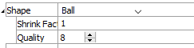
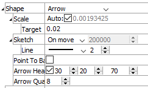
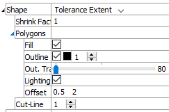

形状
形状属性是一个容器，根据主属性字段选择器的设置，它会呈现三种形式之一。三种形状控件样式如下。
基本形状控件

通常，当形状设置为表示性选项时（例如，为 球体 绘图项选择“球体”形状），会使用此样式。
Shape->[selection]：使用 [selection] 作为该项目的形状。
收缩系数：按百分比缩小绘图项（.1 = 10%，1 = 100%，依此类推）。
质量：设置用于生成球体多边形近似的边数。
箭头形状控件

当需要将项目表示为带等值线的矢量场时，使用此形状样式。
Shape -> Arrow：用箭头渲染该项目。此设置要求该项目按矢量量着色。
比例：自动（勾选时）缩放绘图项。若取消勾选，则启用旁边的字段，以便指定项目大小。
目标：当勾选“自动”时，设置目标比例，以屏幕尺寸的百分比表示。草图：指定是否绘制草图，选项为“上方”、“移动时”或“开启”。若绘图项中的项目数超过相邻字段中的数量，则在“上方”设置下执行草图绘制（选中“上方”时该字段可编辑。若绘图项以某种方式被移动（旋转、放大等），则在“移动时”下使用草图模式。选中“开启”时，草图模式始终开启。
线：设置在草图模式下渲染时使用的线样式和线宽（范围为 1 到 10，单位为像素）。指向基点：反转（勾选时），使箭头指向（而不是发出自）该项目的点源。
箭头头部：包含箭头头部（勾选时），并提供分别用于箭头头部长度、箭头头部半径和杆部粗细的尺寸控制项。
箭头质量：指定渲染箭头头部的圆形部分时使用的边数（数值越大越接近圆形）。
面片形状控件

当需要用项目的范围来表现该项目时，使用此形状样式。
Shape->[selection]：使用 [selection] 作为该项目的形状。
收缩系数：按百分比缩小绘图项（.1 = 10%，1 = 100%，依此类推）。
多边形：以下控制项的容器，这些控制项决定项目面片的显示方式。
填充：包含项目填充（勾选时）。
轮廓：包含项目轮廓（勾选时），并提供用于设置轮廓颜色和宽度的附加控制项。
轮廓透明度：设置轮廓透明度（0 = 完全不透明；100 = 不可见）。
光照：对项目进行明暗着色，如同光线从观察者右肩上方的一个光源照射过来。
偏移：设置 OpenGL 多边形偏移（将这些值设置得接近零可能会提高性能。第一个值是一个比例因子，用于为每个多边形创建可变的深度偏移，第二个值用于创建恒定的深度偏移。）
切割线：设置表示切面位置的线的粗细。
| 这些内容对您有帮助吗？… | FLAC3D © 2019, Itasca | 原文更新于 2020 年 10 月 8 日 |